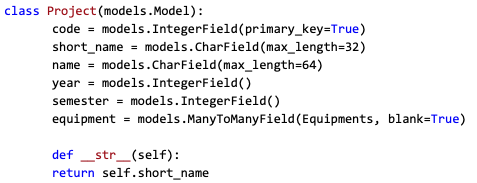

The platform uses the default SQL database implemented by the Django engine, whose models details (ie. the SQL tables) are defined in the models.py document. From that document Django automatically translates the python code and creates the database objects. The database scheme can be seen above. Some details worth mentioning are the way the images are stored. The “Equipments” model in the models.py file has an associated image, the database stored the path to the image while the image itself is stored outside in the “static” folder. 